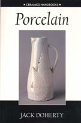
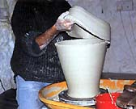
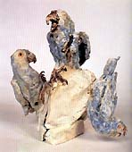

| In Print | |
| Jack Doherty - Porcelain Jack Doherty's Porcelain is another in the 'Ceramics Handbooks' series by A&C Black (Published in the USA by the University of Pennsylvania Press). It's a neat introduction to the topic for the student, hobby artist or budding studio potter. Doherty introduces us to the material via its origins in China's Tang dynasty (618-906 AD) and its peak during the Sung Dynasty (960-1279 AD), the spread to Europe and the subsequent 'porcelain craze' of the 17th century. This is followed by the development of European porcelain and its triumphant march through 18th century Europe. After dealing with porcelain's general history, Doherty turns his attention to the development of studio porcelain. Beginning with Bernard Leach and his 'Sung Standard', he traces the rise of porcelain as a preferred material for many accomplished studio potters - Lucie Rie, David Leach, Geoffrey Whiting, Harry Davis, Mary Rogers, Rudi Staffel and many others. This concludes the historical section, and the author now delves into technical side, covering materials, bodies, forming processes, decoration types, firing methods and glazes. While at first it may appear strange to mix historical fact with technical know-how, the idea begins to make sense when we look at the target audience of the 'Ceramics Handbooks' range, as stated on the back cover: "The books are aimed at the student or practiced ceramist who is experimenting in a new area". I would also add to this list 'the serious hobby potter'. In that respect, it makes sense to introduce the topic with some history and analysis of modern work, providing inspiration to develop something interesting with the new material. The following chapters provide some of the necessary technical knowledge to work with a difficult body.
The final chapter 'Contemporary Approaches' offers a modern perspective and another opportunity to be inspired by what present-day ceramists are doing with the material. Julian Stair (UK), Janet De Boos (Australia), Ryoji Koie (Japan) and Pieter Stockmans (Netherlands) are a few of those mentioned that display a sensibility appropriate to the medium. |
|
| © Ceramics Today |